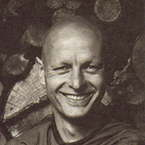

|
KINDNESS AND INSIGHT  |
Venerable Anando was born in Buffalo, New York in 1946, and grew up
near Niagara Falls. Upon leaving high school he joined the U.S. Marines
and served in Vietnam as a radio operator. Severely wounded in combat,
he was flown back to the U.S., where he eventually made a remarkable
recovery. Decorated and invalided out of the service, he enrolled at
Buffalo University to study Psychology and French, and spent one semester
at a Catholic seminary. |
|
The following talk and meditation instruction have been taken from teachings
given by THERE IS A STORY IN THE SCRIPTURES (suttas), regarding a period in the Buddha's life about 20 years after his enlightenment. By that time the monastic community had grown quite large. And it happened that the monks living around the town of Kosambi became involved in an argument over the rules. The dispute got so intense that a schism in the community was about to form. This is something which the Buddha considered very serious indeed. Hearing of the situation he immediately went to where they were, in an attempt to re-establish peace. But each time he tried to talk with the monks they dismissed him. They told him to 'Abide in peace and inactivity here and now,' which is a euphemism for 'Get lost!' After a few attempts at re-establishing concord in the Sangha and being dismissed or ignored, the Buddha left. He made his way to a park where another three bhikkhu disciples were living and practising: the Venerables Anarudha, Nandiya and Kimbila. Now these three disciples were all fully enlightened beings arahants. When the Buddha arrived the monks greeted him in the traditional manner. He asked if they were living in harmony and comfort; did they have any problems with alms food? Venerable Anarudha said, 'We have no problems Lord. Indeed we are well supported and live in harmony.' The Buddha asked, 'How is this so?' Anarudha responded, saying how he considered it a great blessing to have such companions and that he had decided to give up personal preferences; he would do what was conducive to harmony within the community. The Buddha praised Anarudha and asked further, 'Do you live diligently?' Anarudha said, 'Yes Lord, we do.' And the Buddha asked, 'What is it that you do Anarudha?' Anarudha described briefly ways in which they took care of each other. For example: the first one back from the alms-walk set out the mats for sitting upon and would see that the bowls for drinking and washing were in place. And after the meal, the last to finish would put everything away and clean up. They helped each other fill the jars with drinking water and also carry water for the toilets. Once a week they sat up all night discussing the Dhamma and practising meditation. But the most significant point, and it is emphasised several times in this sutta, is where Anarudha says, 'I dwell with a heart of loving-kindness for my companions, both in public and in private. My mind is attuned to theirs, to the extent that there is only one mind.' The other two bhikkhus when asked, responded in the same way. The Buddha again praised and encouraged them to continue. It's inspiring to see how perfectly enlightened beings found that the practice of metta or loving-kindness was what brought harmony and peace. It was manifest in the world by their being sensitive to the needs of those they lived with. Even from the perspective of an arahant, mundane and obvious gestures of help are very important. These are the things which lead on to concord. I've found reflecting on this quite helpful over the years. Also in the suttas it mentions 'eleven benefits' from practising metta bhavana. The first benefit is that one falls asleep easily and contented. The second is that one wakes easily, contented and happy. The third is that one is loved by other human beings, and the fourth is that even non-human beings love one. And there is a list of all the harmful and poisonous things from which one is protected. Also it' s said that metta bhavana makes the mind easily concentrated, and that the face of one who practises metta is serene and radiant. The tenth benefit is that one dies unconfused. The eleventh benefit states that if one has not penetrated with insight the nature of the mind, then the power of metta bhavana will bring about birth in the heavenly realms. A very significant thing about this practice for me is the tolerance for oneself that develops. Some of the questions asked on this retreat indicate that people are still being trapped by the same old syndrome, the struggle with not wanting what is. W e set up what we like against what we dislike. Thoughts and fantasies become the enemy that which we feel we have to get rid of and escape from. How we react in each case depends on the nature of the particular condition. If we perceive it as threatening, then we try to run away from it. When fear arises, for example, we always react with wanting to get away; we want to get some space between us and it. And, of course, as soon as we do that, we empower that condition, we give it life. And it stays with us and disturbs us until we stop reacting. As a result of what happened to me in Vietnam I have suffered from what they call 'post-trauma syndrome'. They've done tests on Vietnam veterans and found that a lot of them have this particular anxiety reaction as a result of past trauma. Now it' s very nice having a label for it, but that doesn't make it go away. I know from years of experience that as long as there is resistance to fear then it has power over us. Metta bhavana is wonderful when dealing with such conditions. W e become less adamant about trying to get rid of them. There is a willingness to befriend them and to see that they are just feelings we are experiencing even the ugly, gruesome, terrifying aspects of the mind. So, for several days now we have been practising with 'May I be well, may others be well,' and perhaps you have noticed that a feeling of goodwill, of metta, begins to arise. When that feeling happens, we can let go of the thought 'May I be well...' and pay closer attention to those actual feelings. Then we can take it a step further and direct those feelings outwards; radiate feelings of goodwill. That word 'outwards' is used quite carefully. One can experience feelings of loving-kindness pervading all directions, filling our world with friendliness, with care, with loving concern. That which was previously troublesome, suddenly in those moments is not. And over a period of time, our attitudes towards ourselves slowly change. There is greater patience and merciful self-forgiveness. In this way, metta bhavana can be used as a skilful means for calming the mind and clearing our attitudes, to provide a suitable base for the practice of vipassana, insight meditation. When I was last in Thailand at Wat Pah Pong, I had a conversation with Ajahn Liam, who is now the abbot there. We were talking about practice, and he mentioned that metta bhavana has certain limitations. One is that we can easily become attached to it, and thereby create an obstacle. There is no question about the benefits of this practice, but sometimes people get really quite high. It can be a very joyful and powerful experience, but that' s not liberation. That which brings about insight and understanding is the practice of looking into the mind investigation, or vipassana. So for the remainder of this retreat, I want to introduce what might be called the 'wisdom factor'. Having practised metta bhavana for several days, we can begin to investigate the mind. The purpose of this practice is to be able to see what is actually happening here and now; to discern the changeability of what is happening, and to see that it is not going to give us the satisfaction we are seeking. Another thing we realise is that all that is happening can be observed. Seeing this is something of enormous importance to us. We see clearly that it is not ours. The 'skilful means' I would like to introduce tonight, and link with what we have been doing, is to simply ask the question, 'Who?' 'Who is it that is practising metta bhavana? Who is it that is listening now? Who is it that is sitting, who is in pain, who is wondering, who is confused, who is doubting, who is happy, who isn't happy? Who is this?' Intentionally bring up the question 'Who?' and notice clearly what state of mind follows. The mind stops! We can struggle to find some intellectual answer; maybe our name comes to fill in the gap or maybe an exalted, inspired idea like 'The Original Mind'. But the Original Mind is not the thought 'Original Mind'. Buddha-nature is not the thought 'Buddha-nature'. Thinking is just thinking. Thought does not really answer the question 'Who?' Now if we are not careful we could use the question 'Who?' like a club or a sledge-hammer. W e could try to pulverise any thoughts that arise in the mind. The questioning needs to be pursued with a sense of inquiry; an almost childlike curiosity. When we see children investigating something new, we see their delight and inquisitiveness. Such an attitude would be wonderful for inquiring into the nature of 'Who?' In this way we can get another perspective on those things that disturb us. Restlessness, for instance: 'Who is restless?' The answer comes: 'I am.' Who is that? 'Who is walking? Who is sitting?' This practice can cut away very effectively at our thinking, speculating and fantasising. I know, however, from personal experience that not everyone can immediately make use of this technique. So don't feel that it is being offered as THE practice. It is a skilful means with particular benefits. It has a simplicity and clarity that I personally like. If you find you can't do it, or it doesn't make any sense, then go back to the practice of metta bhavana. Continue to nurture that sense of goodwill. This will provide a suitable ambience for the skilful means of asking 'Who?', if or when you choose to use it. Sometimes asking 'Who?' can become rather dry even stark and barren whereas metta bhavana can be very uplifting and inspiring. Hopefully, these two skilful means combined will be a good recipe for insightful practice and lead to understanding and peace. |
| Home Page |